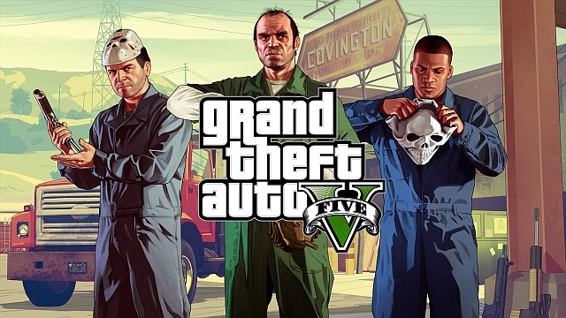

Gry Na Mocny PC

Crysis 3

Crysis 3 to trzecia odsłona serii futurystycznych strzelanek, w których gracz przywdziewa zaawansowany technologicznie nanokombinezon. W trzeciej odsłonie serii Crysis przenosimy się do roku 2047 i wcielamy w posiadacza nanokombinezonu Proroka, który staje do walki z obcą rasą Ceph oraz korporacją Cell.
Dying Light

Dying Light to gra akcji z otwartym światem, utrzymana w klimatach survival horroru. Wcielamy się w niejakiego Kyle’a Crane’a, trafiając do miasta Harran, wzorowanego na Rio de Janeiro, pełnym charakterystycznych faweli. Ludność metropolii została zainfekowana tajemniczym wirusem, który błyskawicznie zmienił wszystkich w zombie.
Grand Theft Auto V

Grand Theft Auto V – kolejna odsłona kultowej serii gangsterskich gier akcji studia Rockstar North – zabiera nas do świata wzorowanego na Kalifornii. W uniwersum Grand Theft Auto stan nosi nazwę San Andreas i składa się między innymi z miasta Los Santos, które stanowi główne miejsce akcji piątki.
Battlefild Hardline
Battlefield Hardline porzuca tradycyjny teatr wojny na rzecz konfliktu innego kalibru – zmagań policji z przestępczością zorganizowaną. Gracz wciela się w Nicka Mendozę, młodego detektywa z Miami, który wyrusza na personalną wendettę po Stanach Zjednoczonych, wymierzoną przeciwko swoim byłym partnerom, których perspektywa szybkiego wzbogacenia się wciągnęła na ścieżkę bezprawia.
Tom Clancy's Rainbow Six: Siege

W 2011 roku firma Ubisoft zapowiedziała grę Tom Clancy's Rainbow 6: Patriots. Miała to być kolejna odsłona słynnej serii strzelanek, tym razem opowiadająca o walce z organizacją terrorystyczną True Patriots. Lata mijały, a o projekcie powoli zapominano.